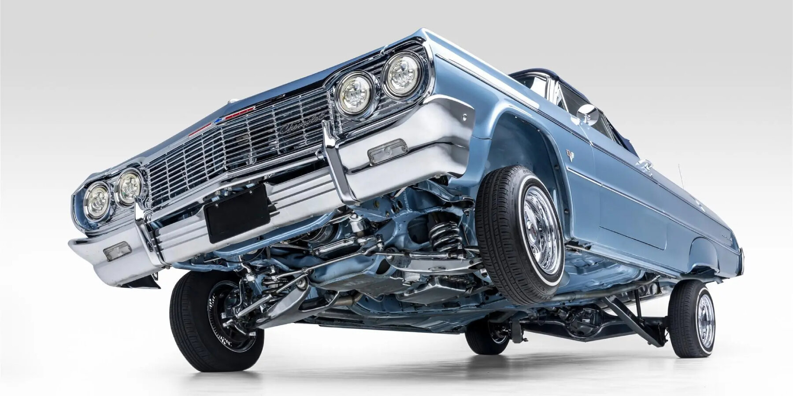

Lab 4 - Data Types and Variables
Challenge
The challenge of the lab is to practice working with javascript variables and data types by declaring, referencing, and outputting them through the console and HTML. The lab icludes debugging and testing to make sure everything works correctly on the web server.
Problems
I didn't really have problems with this lab, it was pretty straight-forward. I struggled to pick a color for the lowrider, but that was the only "issue" I had.
Reflection
This lab went really well and really fast. I had a lot of fun looking into my favorite car and finding out so much about it. I love lowriders so anytime I could bring them up or look at them, its great.
Results
Program Execution: